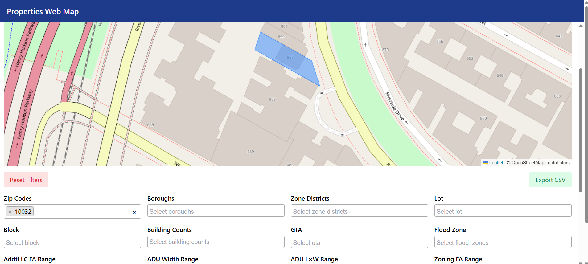

Designed and delivered a full-stack catastrophe risk analytics pipeline simulating
£10.79bn in Total Insured Value across 10,000 UK properties. Built a scalable Snowflake
data warehouse using Medallion Architecture (Raw → Analytics), leveraging Spatial
SQL (Point-in-Polygon) to identify flood zone exposure within Thames high-risk boundaries.
Engineered a secure, enterprise-grade RBAC framework following the Principle of Least
Privilege, enabling controlled BI access while maintaining delegated administrative governance.
Connected Power BI via DirectQuery for real-time analytics and developed advanced DAX
measures to calculate Loss Exposure %, Risk Concentration, and segment-level exposure
insights. Designed an executive-ready dashboard highlighting £1.07bn in flood-exposed
value (9.95% of portfolio), enabling rapid underwriting decisions.

This project analyses public transport accessibility across Lancashire County Council by evaluating
the proportion of the population living within 400 metres of an active public transport stop.The analysis integrates spatial accessibility modelling with socio-demographic indicators (IMD and population structure) to identify areas with good, moderate, or poor access to public transport services..

This Power BI report provides an integrated, decision-focused view of an organisation’s financial
performance, sales operations, and production efficiency.
By combining historical comparisons, time-based trends, and variance analysis, the report enables
leadership to quickly identify revenue decline, sales volatility, and cost inefficiencies.

This project analyzed customer data to identify distinct customer segments based on personality traits and behavioral patterns.
By applying clustering techniques in Python, the analysis revealed four distinct customer personas that are valuable for
personalized insurance product recommendations. The insights from this project support targeted marketing strategies and
enhanced customer engagement by aligning insurance offerings with specific customer characteristics.

This project analyzed a charity’s donor and donation datasets to uncover donation patterns,
donor behavior, and revenue drivers.I combined donor demographics with transaction data
to evaluate donor engagement, identify high-value contributors, and highlight gaps between pledged
and actual donations.Key Functions utilized include JOINs, GROUP BYs, AGGREGATE FUNCTIONs, FILTERINGs,
SUBQUERIEs, and CASE statements.

This Power BI dashboard provides an end-to-end view of project financial health, labor cost progression,
and procurement transparency. It integrates completion metrics, budget forecasts, weekly cost burn-up
trends, and granular AP/PO transaction data. The report enables executives to monitor budget adherence,
margin performance, and cash exposure in near real time, while supporting drill-down analysis for
governance and audit purposes.

This project focused on detecting fraudulent insurance claims using supervised machine learning
techniques in Python. Historical claims data was explored, cleaned, and transformed to identify
patterns associated with fraudulent behaviour. Multiple classification models were trained and
evaluated to assess their effectiveness in distinguishing between legitimate and fraudulent claims.
The models tested included Logistic Regression, Decision Tree, and Random Forest classifiers.
Model performance was compared using metrics such as accuracy, precision, recall, and F1-score,
with particular emphasis on recall to minimise missed fraud cases.
The project demonstrates an end-to-end fraud analytics workflow,
from exploratory data analysis and feature preparation to model evaluation and business-oriented
insights..

This project analyses the potential impact of sea level rise (SLR) on Germany’s coastal regions and
islands, focusing on simulated scenarios of 2 m and 4 m sea level rise.
The objective is to identify low-lying land areas that would become inundated, calculate the total
land area affected, and present the results in a way that supports risk assessment, spatial planning,
and climate adaptation strategies..

This web application provides an intuitive interface for browsing real estate properties on an interactive
map. Users can explore properties, view detailed information, and interact with geographic data through a
modern web interface. The system integrates with external real estate APIs to fetch and display up-to-date
property listings.The WebApplication is built using Python Django and Leaflet, with a PostgreSQL database backend.
The frontend is built using HTML, CSS, and JavaScript.